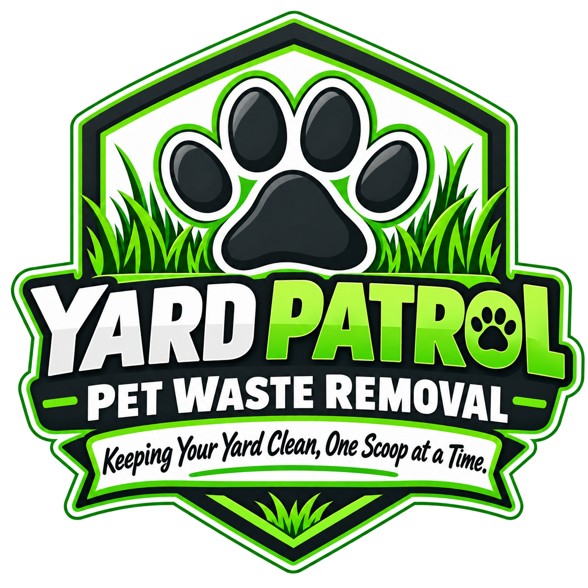
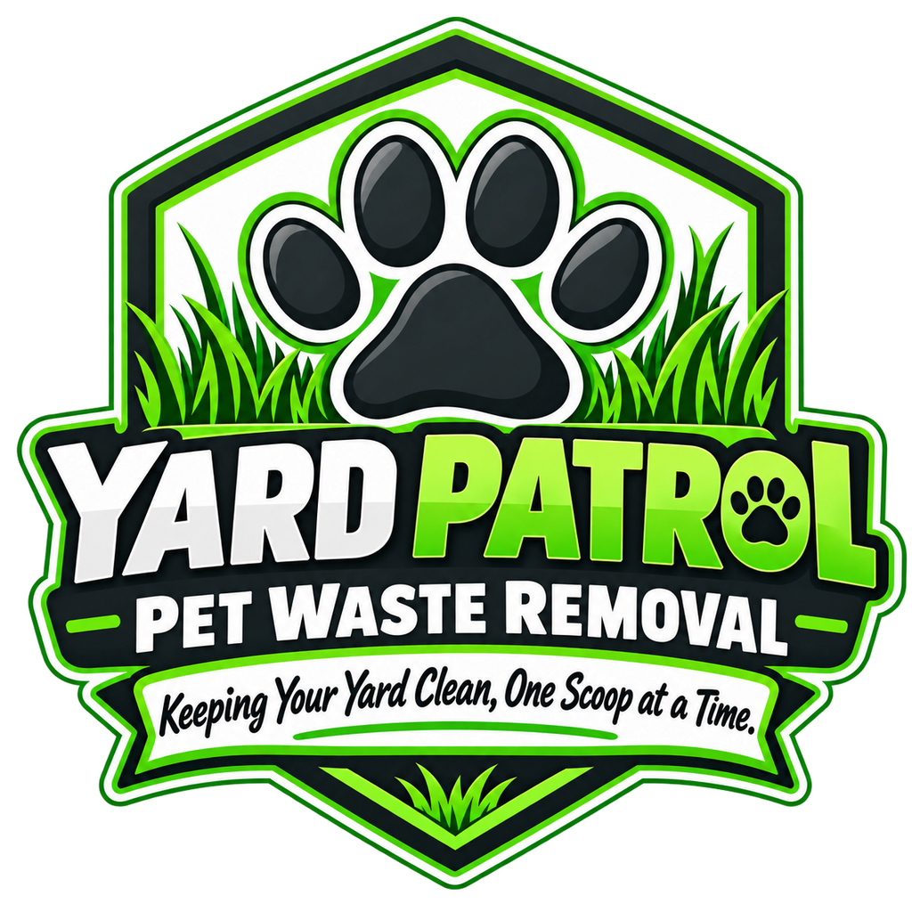
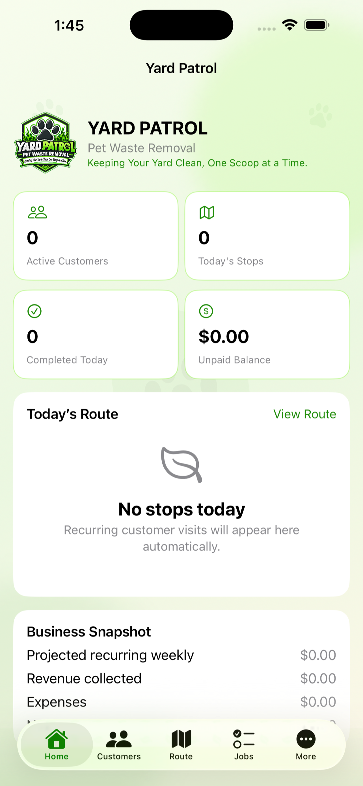

🐾
Weekly Cleanup
Consistent scheduled cleanup for households that want the yard maintained every week.

Yard PatrolPet Waste RemovalDependable pet waste removal for busy dog owners, clean lawns, and happier backyards. Simple service plans, straightforward pricing, and a professional system built around reliability.
Choose a recurring route plan or call for a one-time cleanup when the yard needs extra attention.
Consistent scheduled cleanup for households that want the yard maintained every week.
A flexible recurring option for lighter-use yards and smaller dog households.
Perfect before events, after winter, or anytime the yard needs a reset.
Add deodorizing treatment to help freshen pet areas after cleanup.
Starting at $30 per visit. Final price depends on yard condition and number of dogs.
Starting at $50 for a standard one-time service.
Starting at $75 when a yard needs heavier first-time cleanup.
Weekly, biweekly, one-time, or initial cleanup.
Your service is organized and tracked through the Yard Patrol system.
Jobs, notes, photos, and service status stay organized.
Service invoices and secure Square payments are managed in one place.
The Yard Patrol app keeps the operation organized from the field: customers, dogs, recurring routes, job status, before-and-after photos, invoices, Square payments, expenses, reminders, backups, and reports.

Yard Patrol for iOSApp Store ListingCurrently waiting for Apple review
Yard Patrol Pet Waste Removal serves Weirton and the Ohio Valley with practical recurring cleanup plans and a field-management system designed to keep visits, routes, invoices, and records organized.
“Protecting Lawns From Unwanted Landmines.”
No. As long as the service area is safely accessible, recurring cleanup can be completed without you being home.
Yes. Yard deodorizer starts at $10 and can be added to a cleanup visit.
Initial and overgrown cleanups start at $75. Pricing can vary with yard size, number of dogs, and buildup.
The current app is the business management system used to run Yard Patrol operations. Public App Store availability is pending Apple review.
Serving Weirton and the Ohio Valley.